01
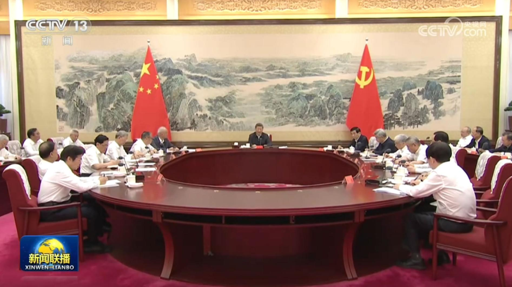
征求对中共中央关于持之以恒推进全面从严治党若干重大问题的决定的意见 中共中央召开党外人士座谈会 习近平主持并发表重要讲话
征求对中共中央关于持之以恒推进全面从严治党若干重大问题的决定的意见中共中央召开党外人士座谈会
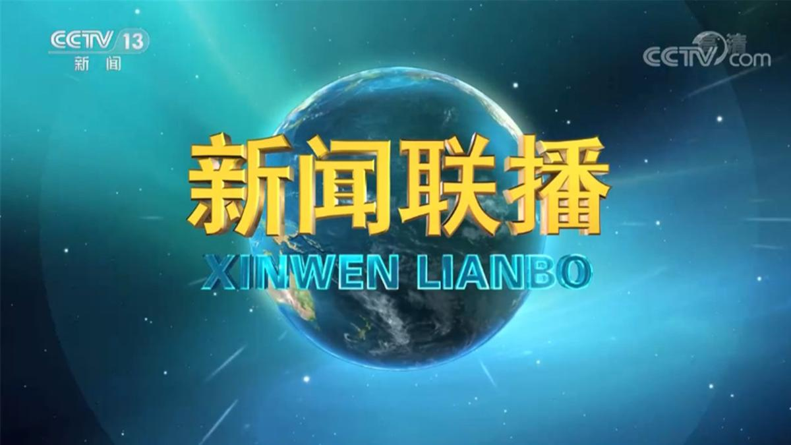

征求对中共中央关于持之以恒推进全面从严治党若干重大问题的决定的意见中共中央召开党外人士座谈会
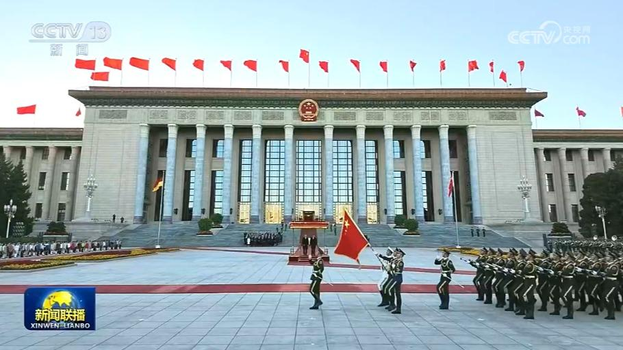
国家主席习近平30日下午在人民大会堂东门外广场举行仪式，欢迎德意志联邦共和国总统弗兰克-瓦尔特·施泰因迈尔对我国进行国事访问。
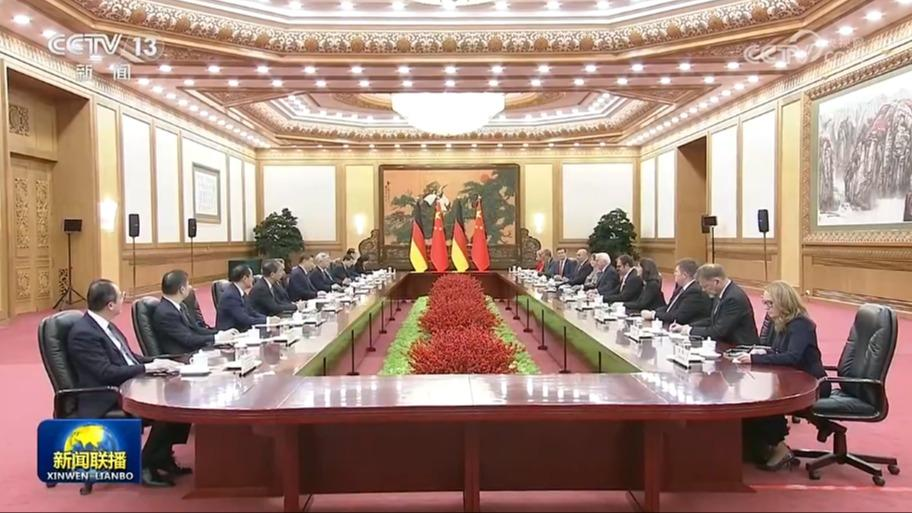
10月30日下午，国家主席习近平在北京人民大会堂同来华进行国事访问的德国总统施泰因迈尔举行会谈。
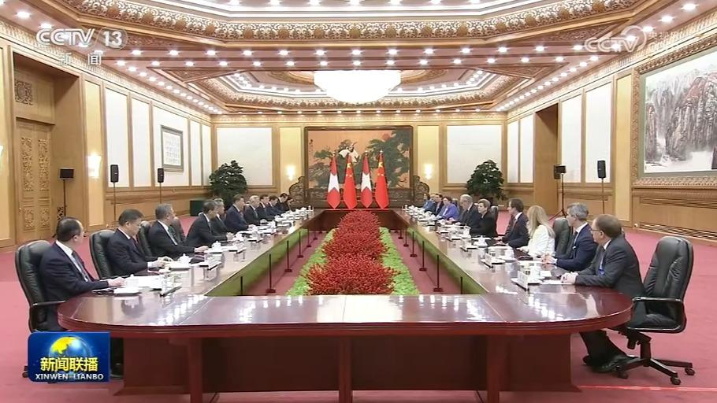
10月30日下午，国家主席习近平在北京人民大会堂会见来华进行工作访问的瑞士联邦主席帕姆兰。
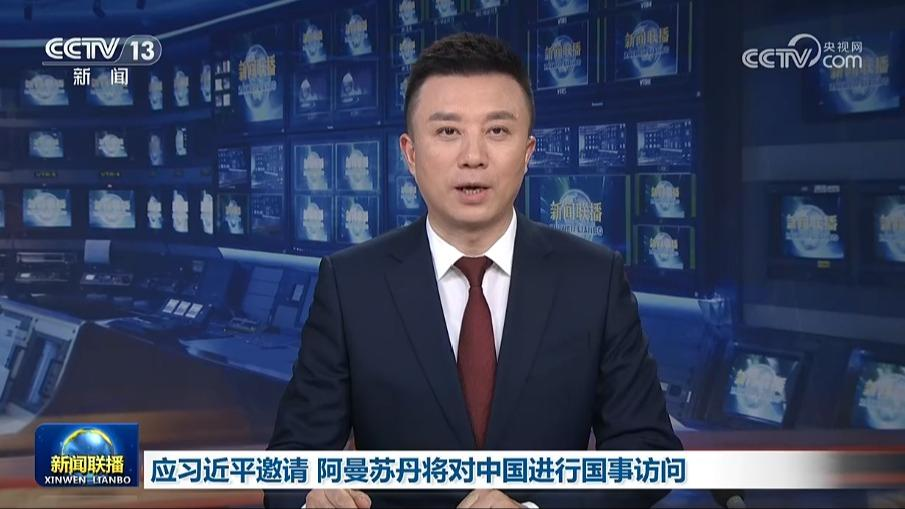
应国家主席习近平邀请，阿曼苏丹海赛姆将于11月1日至2日对中国进行国事访问。
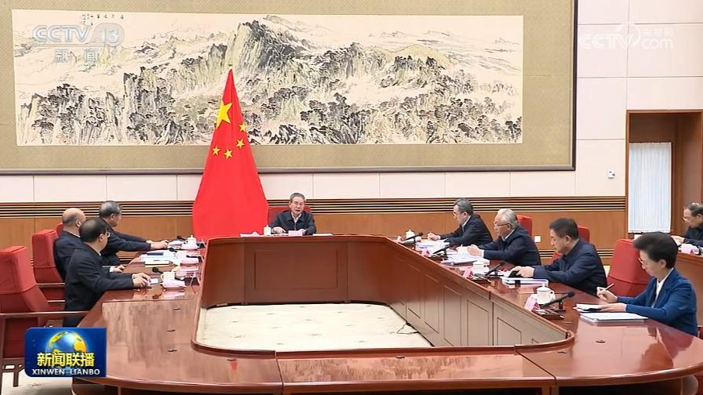
10月30日，国务院总理、党组书记李强主持召开国务院党组会议，学习贯彻习近平总书记在党的二十届五中全会上的重要讲话和全会精神。
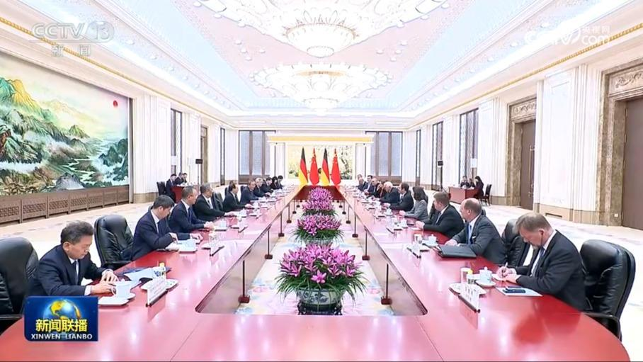
国务院总理李强30日在京会见来华进行国事访问的德国总统施泰因迈尔。李强表示，在双方共同努力下，中德合作蓬勃开展，为两国人民带来更多福祉。习近平主席同总统先生举行会晤，进一步规划中德关系发展。中方愿同德方加强战略沟通，巩固政治互信，坚定维护自由贸易，共享市场机遇，拓展汽车、化工、人工智能、绿色、人文等领域交流合作，迈向更高水平互利共赢。德国是欧盟重要成员，希望德方为中欧关系发展发挥建设性作用。
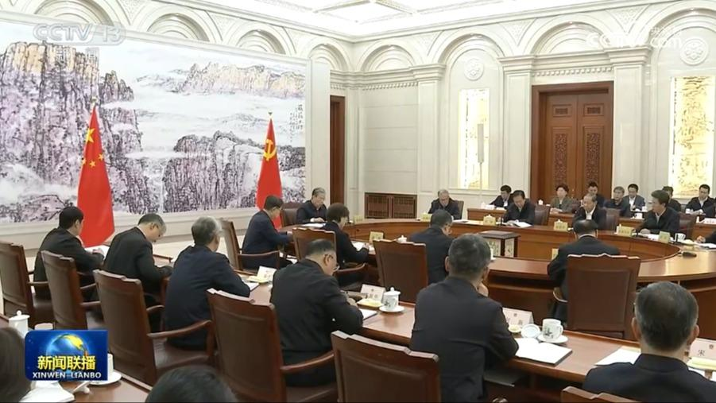
中共全国人大常委会党组30日举行会议，传达学习习近平总书记在党的二十届五中全会上的重要讲话和全会精神，结合人大工作实际研究贯彻落实措施。中共中央政治局常委、全国人大常委会委员长、党组书记赵乐际主持会议并讲话。
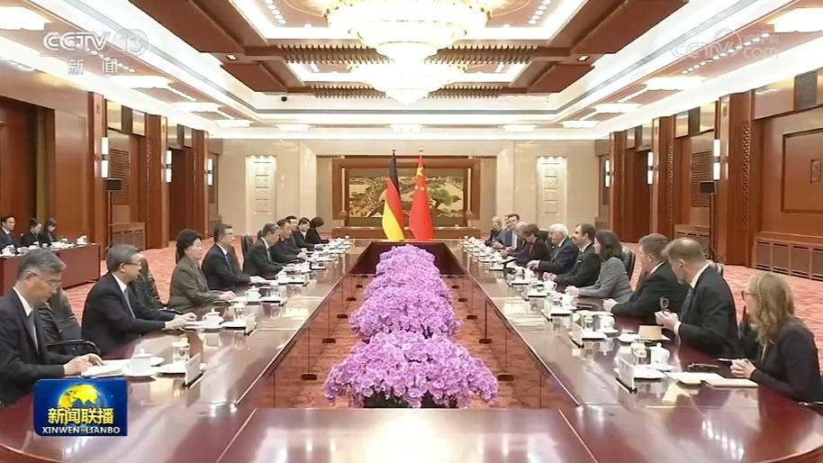
全国人大常委会委员长赵乐际10月30日上午在北京会见德国总统施泰因迈尔。赵乐际表示，中德始终坚持互尊互信、求同存异、互利合作，双边关系成熟而富有韧性。中方愿同德方一道，落实好两国元首重要共识，共享发展机遇，共促开放合作，共守和平安宁，不断丰富中德全方位战略伙伴关系内涵。中国全国人大愿同德国议会加强交流交往，为务实合作提供法律保障。……
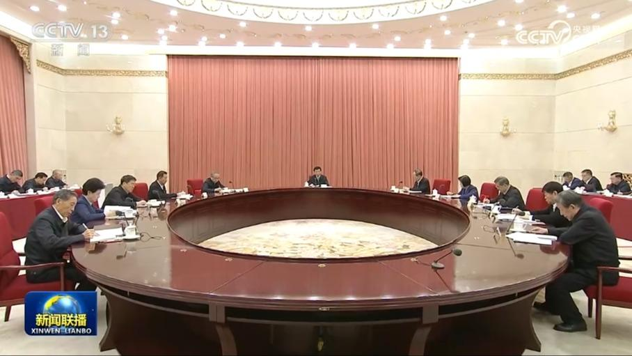
中共全国政协党组30日召开会议，传达学习贯彻党的二十届五中全会精神。中共中央政治局常委、全国政协主席、党组书记王沪宁主持并讲话。
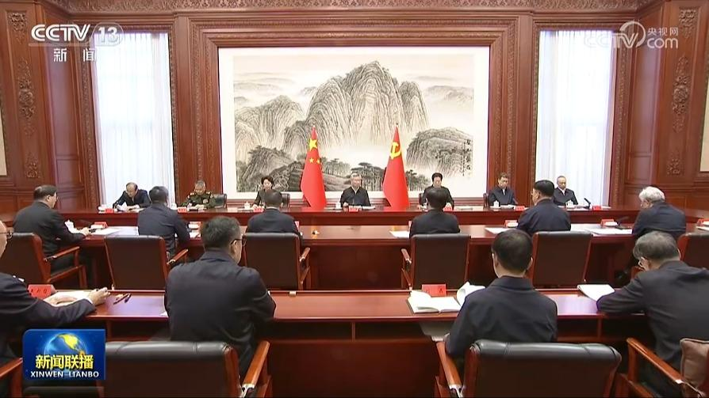
中共中央政治局常委、中央纪委书记李希30日主持召开中央纪委常委会会议，传达学习贯彻党的二十届五中全会精神。他强调，纪检监察机关要认真学习贯彻五中全会精神，深入学习贯彻习近平党建思想，深刻领悟“两个确立”的决定性意义、坚决做到“两个维护”，以更高标准、更实举措推动纪检监察工作高质量发展，持之以恒推进全面从严治党，为以中国式现代化全面推进强国建设、民族复兴伟业提供坚强保障。
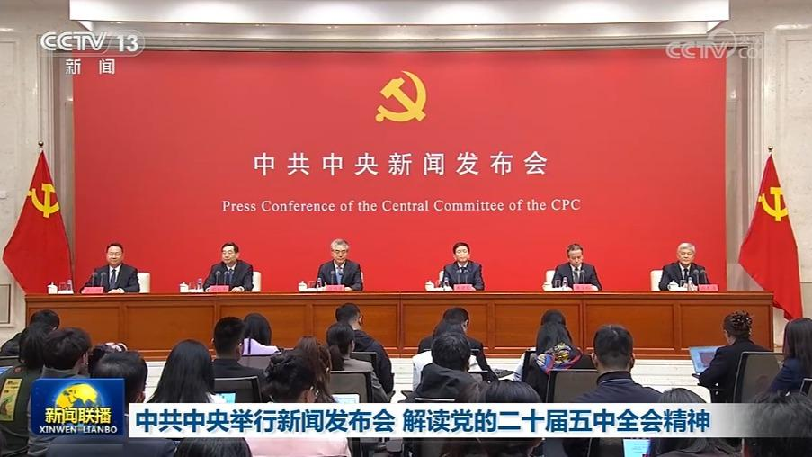
今天（10月30日）上午，中共中央举行新闻发布会，介绍和解读党的二十届五中全会精神。
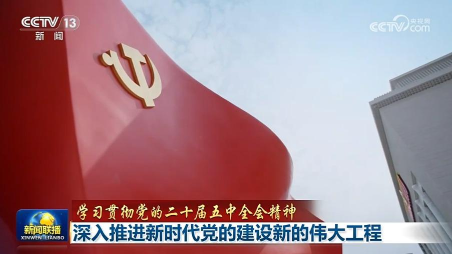
党的二十届五中全会全面总结新时代全面从严治党的成就和经验，深刻分析当前和今后一个时期党的建设面临的形势和任务，对持之以恒推进全面从严治党作出战略部署。
明天（10月31日）出版的《人民日报》将发表评论员文章，题目是《全面贯彻习近平党建思想——论学习贯彻党的二十届五中全会精神》。
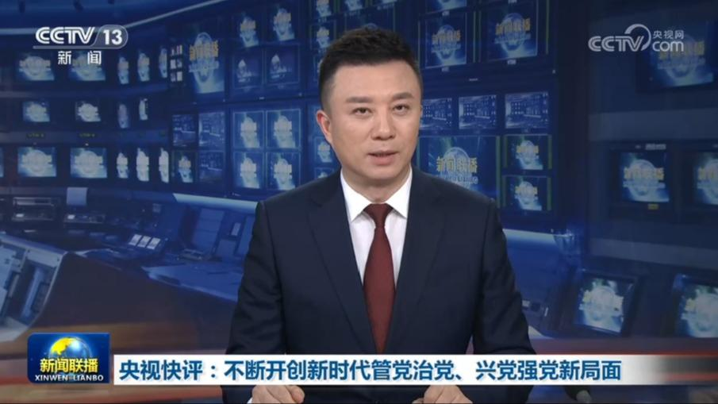
本台今天（10月30日）播发央视快评《不断开创新时代管党治党、兴党强党新局面》。
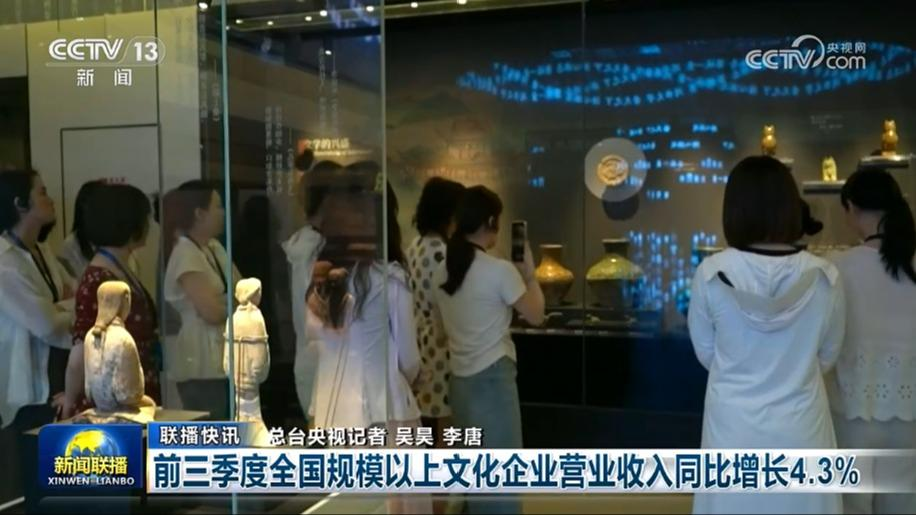
前三季度全国规模以上文化企业营业收入同比增长4.3%